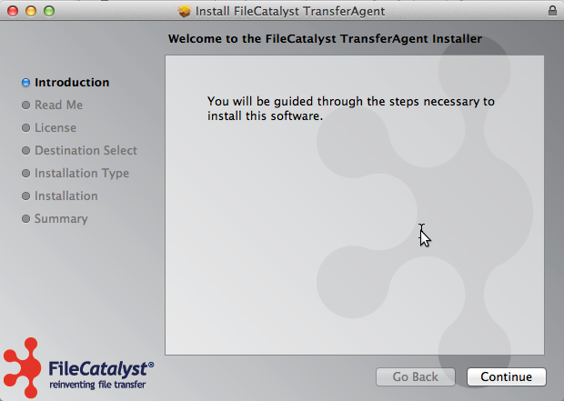
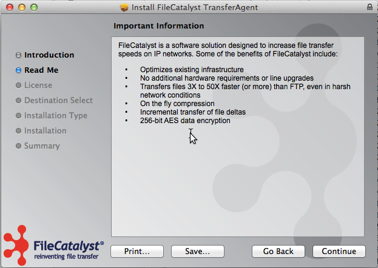
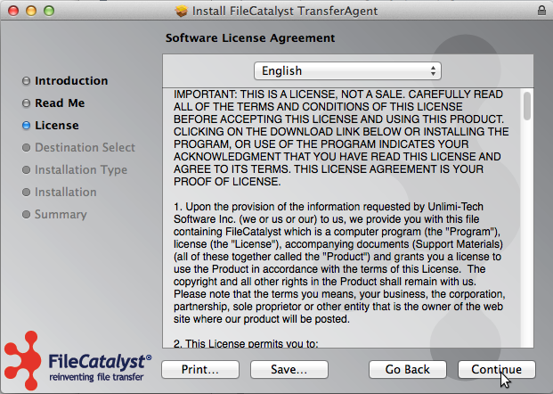
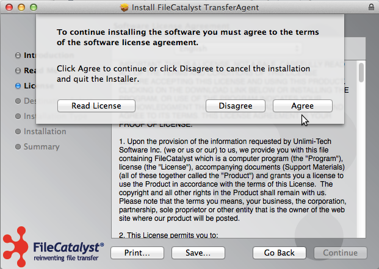
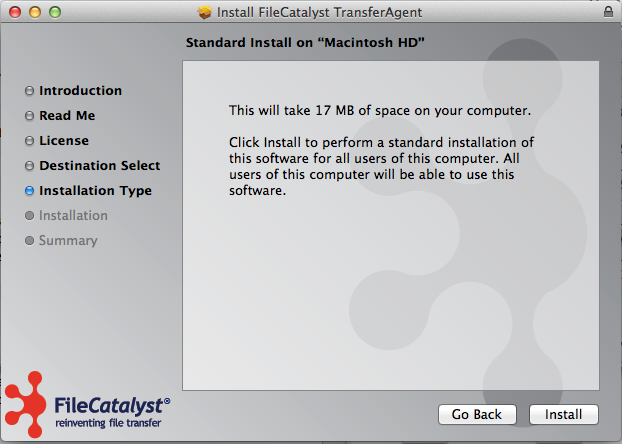
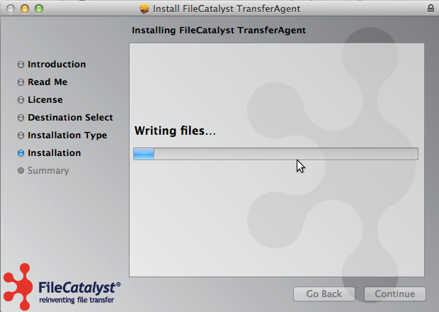
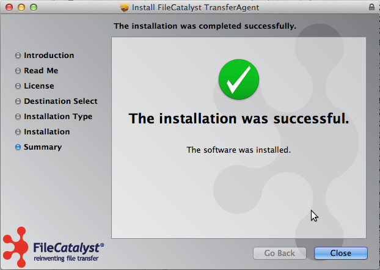

System Requirements
On the end user side, FileCatalyst TransferAgent was designed to run on a multitude of operating systems and hardware configurations. Below are the minimum requirements:
- Dual Core, 2GB+ RAM, 80MB+ of free disk space
- MacOS 10.7 (Lion) or higher
- Recent web browser: Safari (MacOS only), Chrome, Firefox
- Broadband Internet connection
- Network connectivity to FileCatalyst Direct Server, third party FTP servers are not supported
Download the Installer
The organization hosting the FileCatalyst-enabled file transfer page will provide a link to a version of FileCatalyst TransferAgent, typically but not always from the same dialog used to access this guide.
Once the browser has completed downloading the installer, it will usually ask if you would like to run it. If not, you must go to your download location and execute the file "FileCatalystTransferAgent.pkg".
Install the TransferAgent Package
Introduction
You will be shown the first screen of the installer which will give you some information about how the installer works. Click Continue to continue.

Read Me
This next screen gives you some details about our transfer process.

License
Next is the licensing agreement. In order to proceed you must accept the terms of the license.


Installation
Clicking on Install will request permission to install the files on your hard drive.

Continuing will install the files on your hard drive and launch the application.

Finalize Installation
You have finished installing the FileCatalyst TransferAgent and may close the installer
